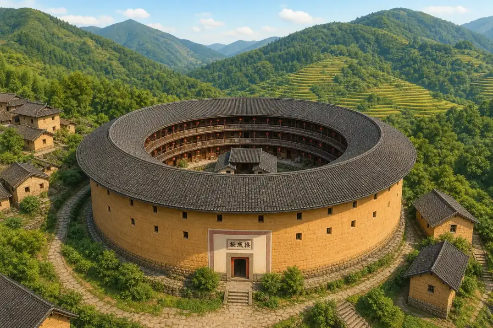
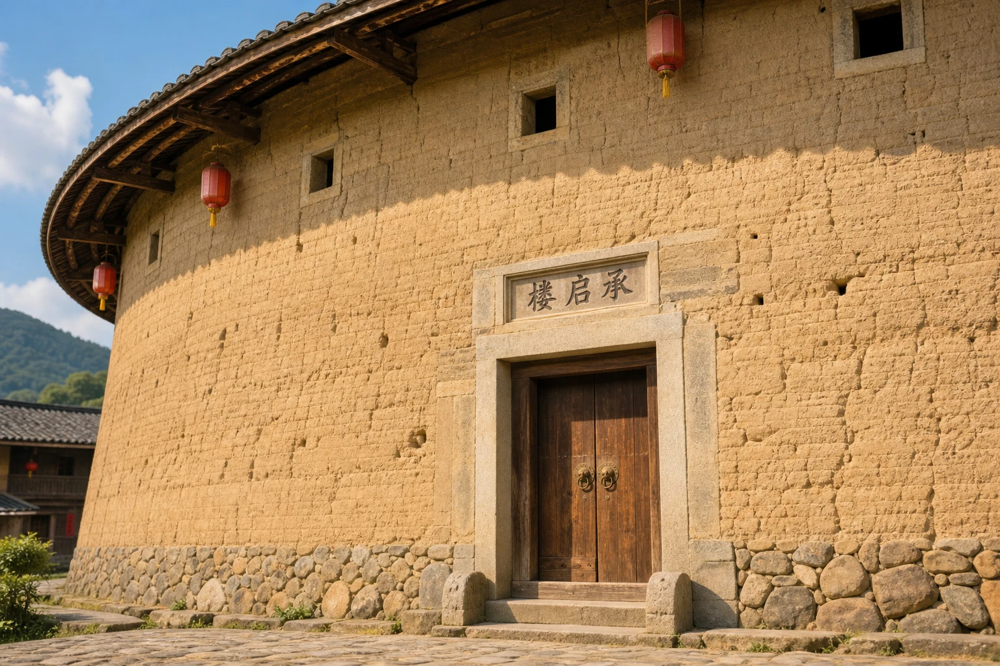
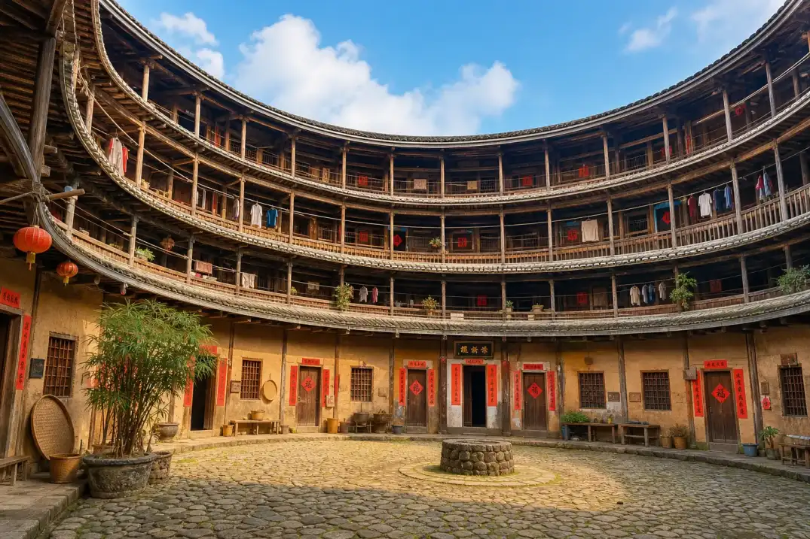

土楼：一扇门后的许多家
Tulou: Many Homes Behind One Gate
Page 1
这是一座房子，还是一个村子？
Is It One House or a Village?

The round tulou surrounds a large courtyard; real tulou can also be square or take other shapes.
沿着福建山区的路转过一个弯，你可能会看见一个巨大的土黄色圆圈。外面是高高的墙，里面是一层层木走廊，中间还有一个大院子。它看起来像一座房子，又像一个藏在房子里的小村庄。
这种大型住宅叫tǔlóu · 中国东南一些地区以夯土建造、供许多家庭共同居住的大型建筑。。“土”指建造外墙的泥土，“楼”指有好几层的建筑，所以英文常把这个名字解释为 earthen building。不过，英文文章一般还是直接使用 tulou 这个名字。
许多土楼里住着一个大家族的许多小家庭，爷爷奶奶、叔叔阿姨和堂兄弟姐妹都可能住得很近。大家各有房间，又共用院子、走廊和一些大厅。一座很大的土楼里，可能住着几百个人。
土楼不一定是圆的。有的是方的，有的形状更特别。它们也不是只属于一个族群。福建不同地方的人都发展出了自己的土楼。共同点是：一座大建筑把许多家庭的生活围在了一起。
Turn a corner on a mountain road in Fujian, a province in southeastern China, and you may see a huge yellow-brown ring. It has tall walls on the outside, rows of wooden walkways inside, and a wide courtyard in the middle. It looks like one house and a small village tucked inside that house at the same time.
This kind of large home is called a tǔlóu · 土楼 · A large rammed-earth building in southeastern China designed for many households.. The Chinese word tǔ means “earth,” and lóu means a building with more than one floor. That is why tulou is often explained in English as “earthen building.” Most English writing, however, simply keeps the name tulou.
Many tulou housed several households from one big family. Grandparents, aunts, uncles, and cousins might all live close together. Each household had its own rooms, while everyone shared the courtyard, walkways, and some large halls. A very large tulou could hold hundreds of people behind one main gate.
Tulou are not always round. Some are square, and others have different shapes. They do not belong to only one group of people, either. Communities in different parts of Fujian developed their own tulou. What they share is one big idea: many family homes joined together inside one building.
Page 2
泥土怎么能变成高墙？
How Can Earth Become a Tall Wall?

Chengqi Lou is a real and famous round tulou; this scene uses its name without reproducing the building's exact appearance.
如果把松软的泥土堆起来，下一场大雨可能就冲散了。土楼的墙当然不是这样建的。工匠先把两排木板固定好，在中间留出墙的宽度。当地泥土是主要材料，也可能拌入沙或石灰，再加水调到合适的湿度。不同土楼使用的材料并不完全一样。
接着，工匠把土铺进木板之间。工人使用长柄、下端较重的木制夯具，一下又一下把土压紧。这种方法叫hāngtǔ · 把湿润的泥土分层放入模板，再反复夯实形成的建筑材料。，英文是 rammed earth。一层变得结实以后，再加上新的一层，木板也跟着向上移动。墙就这样慢慢长高。许多土楼下面还有石头墙脚，帮助土墙远离潮湿的地面。
不过，土楼并不是一个巨大的泥土罐子。厚厚的外墙里面还有木柱、木梁、楼板、楼梯和瓦屋顶。土和木各做自己擅长的事：土墙围住外面，木架撑起里面的生活空间。
If you pile up loose soil, a hard rain may wash it away. The walls of a tulou were built differently. Workers first fixed two rows of wooden boards in place, leaving room for the wall between them. Local earth was the main material. Sand or lime might be mixed in, along with enough water to give the mixture the right amount of moisture. The exact mixture was not the same for every tulou.
Next, workers shoveled in a shallow layer of the earth mixture. They used long-handled wooden rammers with heavy ends to pound it tight. This method is called hāngtǔ · 夯土 · Earth packed firmly in layers inside a frame to make strong walls.. When one layer was firm, they added another and moved the boards higher. The wall slowly rose, one packed layer at a time. Many tulou also had a stone base that kept the earthen wall above damp ground.
A tulou was not one enormous clay pot. Inside the thick outer wall were wooden posts, beams, floors, stairs, and a tiled roof. Earth and wood each did a different job. The earth formed a strong outer ring, while the timber frame made rooms and walkways inside.
Page 3
一户人家为什么从楼下住到楼上？
Why Did One Home Stretch Upward?
在许多土楼里，一户人家的房间不是横着排在同一层，而是从楼下排到楼上。底层常常用来做饭，二层可以放粮食，较高的楼层用来睡觉。
这样的安排很实用。做饭需要水，厨房放在地面上比较方便；粮食抬高一些，能离潮气和小动物远一点；卧室在更高的地方，也更安静。家人每天会在楼梯上上下下，就像住在一条竖起来的家里。
当然，不同土楼的房间并不完全一样。有些家庭共用木走廊和楼梯，有些家庭有较为独立的入口。人们会按照家庭大小、当地习惯和建筑形状来安排房间。
In many tulou, one household's rooms did not sit side by side on a single floor. They stretched from the bottom of the building to the top. The ground floor was often used for cooking, the second level for storing grain, and the higher rooms for sleeping.
That plan was practical. A kitchen needed water, so the ground floor was convenient. Grain stayed farther from damp earth and small animals when it was raised. Bedrooms higher up could be quieter. Family members climbed up and down the stairs each day, almost as if their home had been turned on its side.
Rooms were not arranged exactly the same way in every tulou. Some families shared wooden walkways and stairs. Others had more private entrances. People adjusted the rooms to fit the family, local customs, and the shape of the building.
Page 4
大院子里的一天有多热闹？
A Busy Day in the Courtyard

The courtyard connected the households and gave people a place to work, meet, and hold family events.
清早，土楼的院子先被声音叫醒。有人打开木门，有人生火做饭，脚步声沿着木走廊传开。太阳升高以后，院里可能有人晾衣服、晒食物、修工具，孩子也从这一头跑到那一头。
住得近有很多方便。需要帮忙时，亲人就在几步之外。节日和家庭仪式也能在共同的大厅或院子里举行。不过，这么多人住在一起，不可能每天都安安静静。饭菜的香味、婴儿的哭声和邻居的说话声，都可能穿过院子。
土楼的聪明之处不是让每个人过上一模一样的生活。它是在私人的房间和共同的空间之间找办法：关上门是一家人的小天地，走出门又回到大家共享的大院子。
Early in the morning, sounds woke the tulou courtyard. Wooden doors opened. Cooking fires began. Footsteps traveled along the wooden walkways. Later, people might dry clothing and food, repair tools, and carry out daily work while children ran from one side of the courtyard to the other.
Living close together could be useful. When someone needed help, relatives were only a few steps away. Festivals and family ceremonies could fill the shared hall or courtyard. But hundreds of people could not be quiet all day. The smell of cooking, a baby's cry, and a neighbor's voice could all cross the open space.
The clever part of a tulou was not making everyone live exactly the same way. It found room for both private and shared life. Close a door, and one household had its own small world. Step outside, and the whole courtyard was there.
Page 5
高墙是为了挡住什么？
What Were the Tall Walls Meant to Stop?
福建山区过去并不总是安全。盗匪或武装冲突可能威胁村庄，所以一些土楼把外墙修得很厚，底层很少开窗，出入口也只有一两处。大门一关，整座楼更容易一起防守。
厚墙还能挡风，帮助里面的房间少受外面天气影响。但土楼不是无敌的城堡。木头怕火，土墙怕屋顶漏下来的雨水。再结实的楼，如果很多年没人修，也会受损。
今天，一些土楼仍有人居住，另一些成了游客参观的地方。院子里可能同时出现晾晒的衣服、居民的摩托车和举着相机的游客。土楼不是一只空壳。对许多人来说，它仍然是家。
The mountains of Fujian were not always safe in the past. Bandits or fighting could threaten a village. Some tulou were built with very thick outer walls, few windows near the ground, and only one or two entrances. When the main gate closed, the whole building was easier to defend together.
Thick walls also blocked wind and helped protect the rooms from weather outside. But a tulou was not an unbeatable fortress. Wood could burn, and rain from a broken roof could damage earthen walls. Even the strongest home would suffer if nobody repaired it for many years.
People still live in some tulou today, while others receive many visitors. In one courtyard, you may see laundry, a resident's scooter, and tourists holding cameras. A tulou is not just an empty shell from long ago. For many people, it is still home.